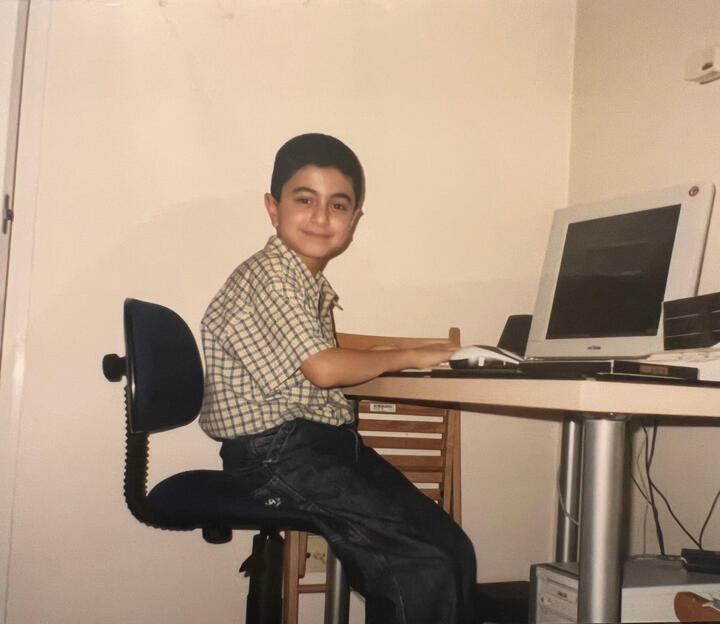

British-Persian, currently in the Alpine region and working remotely on a portfolio of bets.
No investors, no employees, no boss. Customers only. VCs: don't contact me.
The Rational brand launched in 2020, drawing from Poor Charlie's Almanack and the Incerto. Seek sanity, not vanity.
Now
- Rational Founder — long-form podcast on enduring texts and worldly wisdom. Relaunching soon with private club and notes library. Previously Rational VC, ranked Top 25. 40+ hours archived.
- Rational.School — tech hiring programme & coaching. 500+ people hired.
- RemoteStreet.com — boutique tech talent placement for companies. Vetted, not volume.
- Rational.Fund — small fund. $2M+ AUM. Co-invested w/ Founders Fund, OSV, Balderton, et al.
- RationalX — advisory for founders & creators on AI, product & growth. Selective.
Past
- Senior Software Engineer, Tesla, at the Gigafactory.
- Investment Banker + founding team at Silicon Valley Bank London. Wore many hats.
- Co-Founder & Lecturer of the AI/ML Programme at Codesmith.
- Broad operator experience across tech & startups in US, UK & EU. Some acquired (e.g. Hofy).
Origin
Born in Shiraz, heart of the old Persian empire, under difficult circumstances. Escaped to London at five. Grew up lower class, attending some of the worst-rated schools in England. Ran businesses in high school. Worked 40+ hours a week in hit-target-or-die cold sales while completing a full-time degree in financial engineering. Didn't start as a coder. Learned to sell, then build. "Born in Iran, made in England."
Interviews
Stephen Wolfram, Jim O'Shaughnessy, Ben Awad, Will Bruey, Eric Jorgenson
Interests
Reading timeless texts, autodidactism, latticework curiosity, sovereignty, asymmetric bets, architecture, steaks after deadlifts, high uv index, martial arts, flâneuring old towns, mentoring Iran's youth, Zoroastrianism.
Elsewhere
Essays, RSS, X, yari [at] hey [dot] com